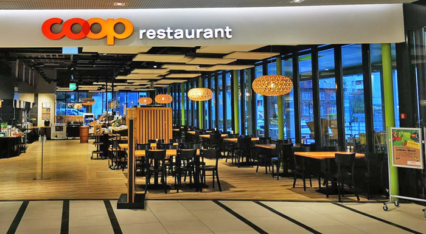

coop restaurant
About us Wishlist Menu orders Contact
Welcome to Coop's kitchen
The Coop restaurant: great food every day, all over Switzerland
The Coop restaurants offer you a large selection of delicious, well-balanced
and inexpensive dishes. Fresh and sustainable ingredients are important to
us when preparing them. Come and eat at Coop with family or friends, hold
a kids’ party or join in Cooking Fun for Kids. We look forward to welcoming
you.
In our Coop restaurants, you experience the delight of varied buffets and the
speed of a self-service restaurant, without compromising on the quality of
fresh and sustainable ingredients. Would you prefer to be served? At
selected cooking stations, our kitchen team will prepare your dishes right in
front of your eyes. Our comprehensive selection of tasty and balanced
dishes suits all wallets. We offer the appeal of a fast-food restaurant without
losing sight of flavour. Whether you come alone, with friends or with
colleagues – in our Coop restaurants we look forward to welcoming you with
a unique culinary experience.
